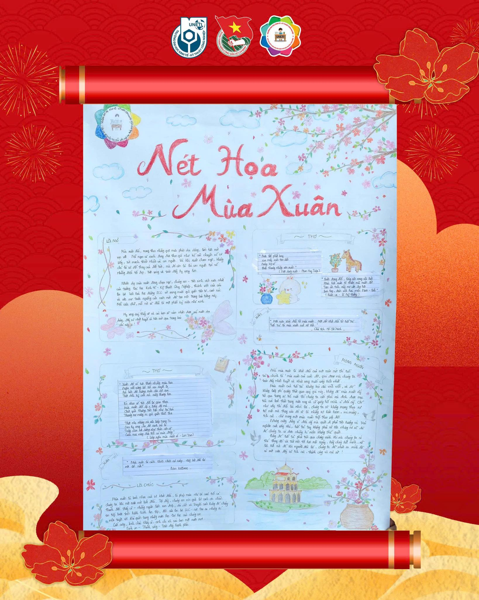

📅 Thời gian bình chọn: Từ ngày 07/01/2026 đến ngày 11/01/2025
🗳️ Thể lệ bình chọn (Cho mỗi bài thi):
- Mỗi 1 lượt like (hoặc bất kỳ emoji cảm xúc) = 1 điểm.
- Mỗi lượt comment đúng cú pháp #VanhoaTetSinhvien #SCC = 2 điểm.
- Mỗi lượt share công khai, tag tối thiểu 03 bạn, và kèm hashtag: #UNETI #VanhoaTetSinhvien #SCC = 5 điểm.
* Lưu ý: Lượt share chỉ được tính điểm khi tài khoản share đã theo dõi Page.
🔥 Gửi gắm mùa xuân vào từng trang giấy. Hãy cùng chúng mình lật mở những trang báo tường độc đáo và tiếp lửa cho các đội thi bằng những lượt tương tác thật nồng nhiệt nào!
|
 ✨ Tên tác phẩm: Sắc Xuân tuổi trẻ 💬 Thông điệp gửi gắm: Nếu mùa xuân là khởi đầu mới của một năm thì tuổi trẻ chính là "Mùa xuân của cuộc đời". |
 Facebook CLB:
https://www.facebook.com/VHHDSVUNETI
Facebook CLB:
https://www.facebook.com/VHHDSVUNETI
 TikTok CLB:
https://tiktok.com/@uneti.clb.scc
TikTok CLB:
https://tiktok.com/@uneti.clb.scc
✉️ Email SCC: clb.tuyentruyenvhhd@gmail.com
📞 Hotline CLB: 02432336137
🌐 Website Trường: https://uneti.edu.vn